En esta opción es donde se realiza el cálculo de las nóminas de la empresa, según el tipo de nómina seleccionado (semanal, bisemanal, quincenal, mensual).
El usuario únicamente tiene que seleccionar el tipo de nómina y digitar una descripción ya que el sistema automáticamente le desplegará el código de calendario de pago y las fechas desde – hasta, según la parametrización que se le realizó al tipo de nómina seleccionado (este proceso se explicará en el manual: “Parámetros RH”).
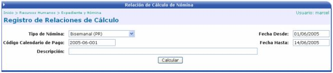
Al hacer un click en el botón “Calcular”, el sistema agrupara por tipo de nómina, la lista de empleados que pertenecen a ella.
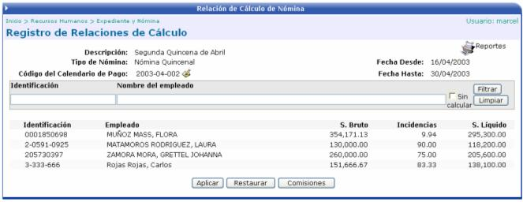
Los empleados que se listen en este paso serán los que tengan asociado el tipo de nómina elegido para dicho cálculo. Si se activa el siguiente check
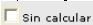
y se presiona el botón Filtrar, el sistema trae los registros que no pudo calcular, ya sea por que falta información por aplicar o porque los salarios líquidos están con montos negativos.
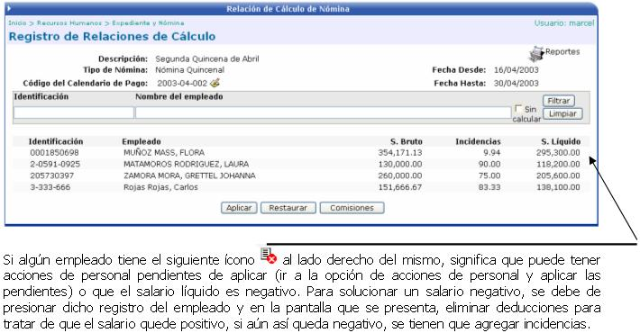

Al presionar ese botón, el sistema le pedirá al usuario que ingrese la cuenta cliente a debitar para cuando se realice el pago de la nómina:
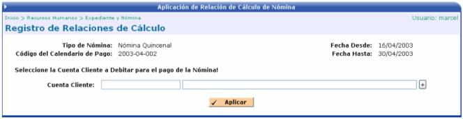
Una vez ingresada la cuenta a debitar, se presiona el botón, el cual registra la información en los históricos para luego, ser contabilizada. Además pasa el registro de nómina a un proceso de verificación, antes de que el usuario realice el pago correspondiente de dicha nómina (este proceso de verificación se explicará en otro manual: “Recepción de Pagos”).
Si se presiona este botón, el sistema le preguntara que si desea restaurar la relación de cálculo? Si la respuesta es SI, entonces se vuelve a recalcular la nómina:
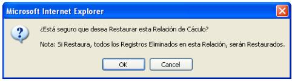

Este botón estará activo o parecerá en la pantalla solamente si en el módulo de Parámetros RH en la opción Parámetros Generales en la sección Cálculo de Comisiones esta activado el check
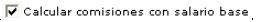
Sirve para agregar comisiones a los empleados de la empresa. Si se ingresan manualmente se debe de escoger un empleado, el concepto de la comisión, el monto base (salario real), el monto de la comisión y el centro funcional:
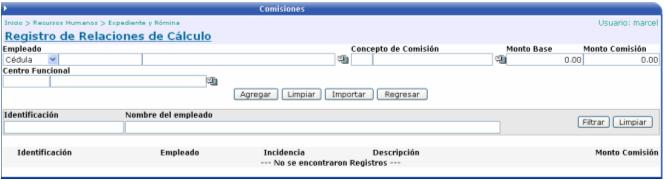
Si se desea importar masivamente comisiones,
desde un archivo de texto, se presiona el botón  y se
presenta la siguiente pantalla:
y se
presenta la siguiente pantalla:
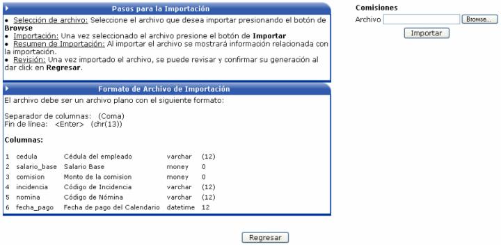
Las instrucciones a seguir y el formato que tiene que tener el archivo de texto, se describen a continuación:
Pasos para la Importación:
Selección de Archivo: seleccione el archivo que desea importar, presionando el botón “Browse”

Importación: una vez seleccionado el archivo presione el botón de “Importar”

Resumen de Importación: al importar el archivo se mostrará información relacionada con la importación.
Revisión: una vez importado el archivo puede revisar la importación en la lista de comisiones por empleado.
Formato del Archivo de Importación:
El archivo debe ser un archivo plano y debe de tener las siguientes columnas:
1. Identificación del Empleado.
2. Salario Base.
3. Monto de la Comisión.
4. Código del Concepto de Comisión (código de la incidencia donde se va a cargar la comisión).
5. Código de la Nómina.
6. Fecha de Pago (de la nómina).
Para separar las columnas se debe de utilizar una coma (,) y para el fin de línea se debe de presionar la tecla <Enter>
Un ejemplo del archivo a importar es el siguiente:

En la pantalla que muestra la lista de empleados correspondientes al tipo de nómina seleccionada, se puede consultar a un empleado y además si es necesario, se le puede agregar una deducción o una incidencia.
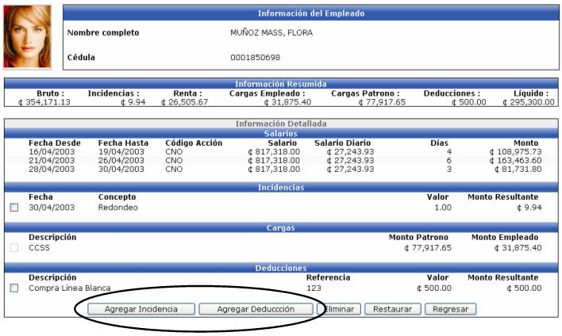
Cuando se requiera hacer una inclusión de información, el sistema le desplegará un mensaje, advirtiéndole, que si realiza la modificación, la nómina se recalculará automáticamente.
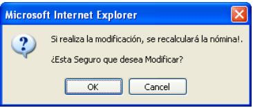
Adicionalmente el usuario puede eliminar
deducciones o incidencias para el cálculo de esa planilla, pero hay que
tener presente que NO se eliminan del Registro de Deducciones o del de
Incidencias según corresponda, solamente se eliminan para el cálculo específico
de dicha nómina. Para esto se tiene que seleccionar el registro a excluir
y presionar el botón  y la nómina se recalculará automáticamente.
Las deducciones que se pueden borrar son aquellas que NO sean de Ley o
las que NO sean Obligatorias (Esto se define en el módulo de Parámetros
RH).
y la nómina se recalculará automáticamente.
Las deducciones que se pueden borrar son aquellas que NO sean de Ley o
las que NO sean Obligatorias (Esto se define en el módulo de Parámetros
RH).
También tiene la opción de restablecer la información eliminada, presionando el botón y la nómina se recalculará automáticamente.
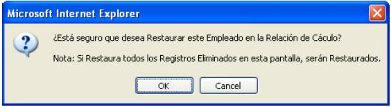